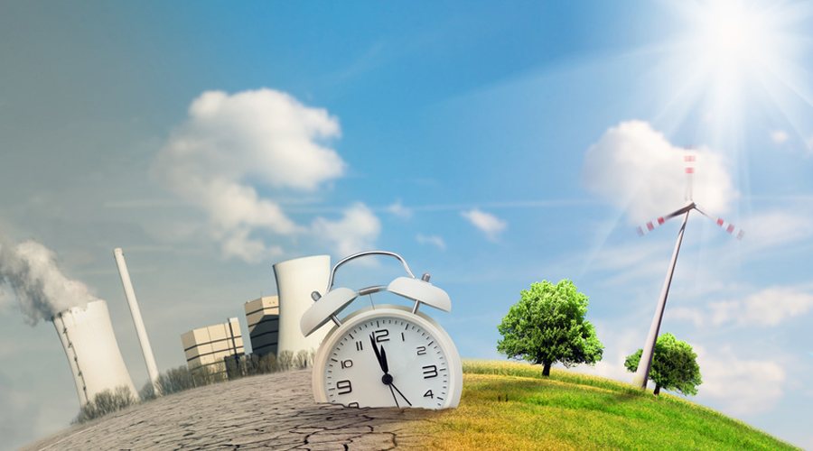

L'adaptation au changement climatique devient elle une urgence absolue ?
14/03/2022
Les impacts de la hausse de la température de la planète sont déjà très visibles sur les écosystèmes et les activités les humaines. S’y adapter devient une urgence absolue, affirment les auteurs du rapport du Giec sur l’adaptation publié ce 28 février 2022